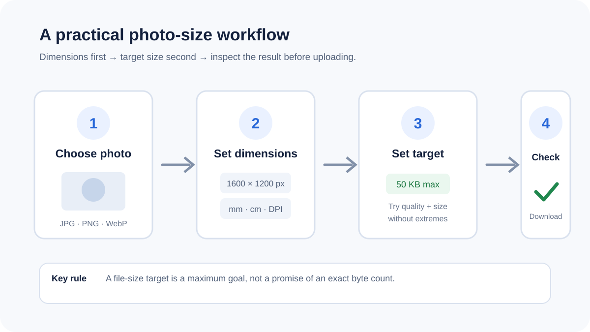
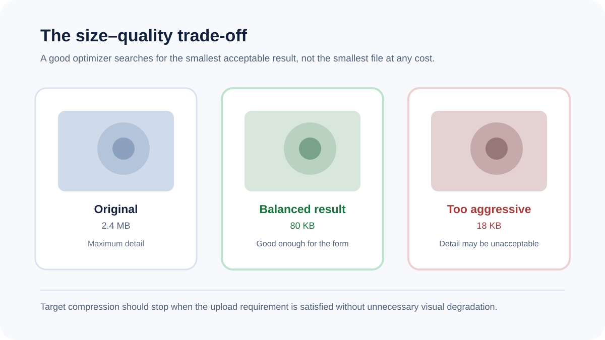

How to compress a photo to 20KB, 50KB or 100KB
When a form rejects a photograph because the file is too large, the goal is usually a smaller image that still looks clear enough to read. The most reliable workflow is to control dimensions first, then compress the image to a maximum file-size target.

What “20KB” or “50KB” actually means
A file-size limit is measured in bytes, not visual quality. Two photos with the same dimensions can produce very different file sizes because of their content, format and encoding. A target such as 50KB is therefore a maximum to aim for, not a promise that every image can be encoded at exactly that number without visible damage.
The best order of operations
- Start with the required dimensions. If a form specifies a width, height or physical size, meet that requirement first.
- Choose an appropriate format. JPG is usually efficient for photographs. WebP can also be compact where the receiving form accepts it. PNG is useful when transparency or sharp flat graphics matter.
- Set a maximum width. Very large camera images contain pixels the form may never display.
- Compress toward the file-size limit. Lower quality gradually rather than jumping straight to an extreme setting.
- Inspect the result. Make sure text, faces and edges remain recognizable before submitting the file.
20KB, 50KB and 100KB
Small limits require more aggressive optimization. At 20KB, a detailed photograph may need both smaller dimensions and stronger JPEG/WebP compression. At 50KB or 100KB, there is usually more room for visual quality, but the result still depends on the image itself.
Why PNG often struggles with tiny targets

PNG is lossless and can be excellent for signatures, screenshots and images with transparency, but it is often inefficient for photographic content. A photo that cannot reach a small target as PNG may reach the same limit comfortably as JPG or WebP.
Can you guarantee an exact byte count?
No browser encoder can honestly promise that every image will hit an arbitrary byte value without constraints. A robust tool should treat the requested size as a maximum goal, try bounded quality and dimension combinations, then report when the safest tested result is still above the target.
Privacy and local processing
For sensitive application photographs, local browser processing can avoid sending the source image to a conversion server. FreePDF Tools reads the selected file in the browser and creates the output on the device for supported image workflows.
Use the compressor
Common mistakes
- Optimizing only file size while ignoring a required width or height.
- Using a tiny target that makes text or facial details unreadable.
- Changing the original file instead of keeping the source untouched.
- Assuming every form accepts WebP or PNG just because the browser can create it.
Frequently asked questions
Can I compress a JPG to 20KB?
Yes. The compressor can try a 20KB target and progressively adjust encoding and dimensions. Whether the target is achievable without excessive quality loss depends on the source image.
Should I use JPG or PNG for a passport-style photo?
For ordinary photographs, JPG is commonly more size-efficient. Follow the exact format requirement of the application you are submitting to.
Does compression change my original photo?
No. The browser creates a separate output file.